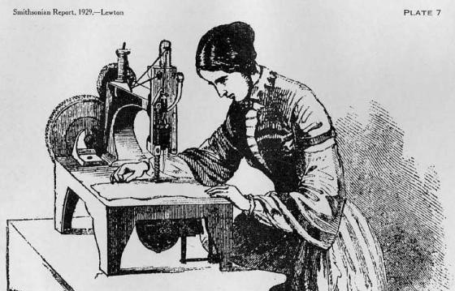

The Basics of Sewing
History of Sewing

People started sewing as long as 20,000 years ago, during the last Ice Age. Archaeologists have discovered bone needles with eyes, used to sew together skins and furs, dating back to this time. The earliest known sewing needles made of iron come from the Celtic hill fort at Manching, Germany, and date to the third century BC. The tomb of a minor official of the Han Dynasty (202 BC-AD 220) has been reported by Chinese archaeologists as containing a sewing set complete with thimble. This would be the oldest known example of a thimble, which originated as a device to help push crude needles through resistant materials such as animal skins.
It was over 1500 years later in 1790, that the first workable sewing machine was invented and patented by the British inventor Thomas Saint. Earlier, in 1755, Karl Weisenthal, a German inventor, devised the first sewing machine needle, but did not produce a complete machine. Saint's machine, which was designed to sew leather and canvas, mainly on boots, used only a single thread and formed a chain stitch. Instead of a needle, an awl was employed to pierce a hole through the material being sewed. Another mechanism placed the thread over the hole, and then a needlelike rod with a forked point carried the thread through to the underside of the work, where a hook caught the thread and moved it forward for the next stitch. When the cycle was repeated, a second loop was formed on the underside of the cloth with the first loop, thus forming a chain and locking the stitch. Saint's machine, however, never progressed beyond the patent model stage. And it overlooked the Weisenthal needle design.
In 1830 a French tailor, Barthelemy Thimonnier (1793-1857), patented the first practical sewing machine. It employed a hook-tipped needle, much like an embroidery needle, that was moved downward by a cord-connected foot treadle and returned by a spring. Like Thomas Saint's machine, it produced a chain stitch. By 1841, eighty of his machines were being used to sew uniforms for the French army. However, his factory was destroyed by a mob of tailors, who saw the new machines as a threat to their livelihood. Thimonnier died bankrupt in England.
The earliest idea for a double-thread sewing machine came from Walter Hunt (1796-1860) of New York in 1834. Often called a Yankee mechanical genius (he also invented the safety pin), Hunt devised a machine that used a reciprocating eye-pointed needle. It worked in combination with a shuttle carrying a second needle, making an interlocked stitch comparable to that of the modem machine. He abandoned the project, however, convinced that his invention would throw impoverished seamstresses out of work.
None of these machines presented any real competition to hand-sewing, though; that was accomplished by Elias Howe (1819-67) of Massachusetts. In 1846 Howe patented a sewing machine with a grooved, eye-pointed needle and shuttle. This lock stitch machine could sew nothing but straight seams, which could not be longer than the basing plate. Unsuccessful in marketing the device in America, Howe went to England to adapt his machine for an English corset-maker. He returned penniless to find that sewing machines were being sold by many manufacturers, all infringing on some part of his 1846 patent. In 1856, after favorable litigation, Howe entered into the world's first patent pool.
In 1851, Issac M. Singer (1811-75) patented the first rigid-arm sewing machine. Before this, all machines employed an overhanging arm that held the needle directly and vibrated with it. Singer's machine also included a table to support the cloth horizontally, instead of a feed bar; a vertical presser foot to hold the cloth down against the upward stroke of the needle, and an arm to hold the presser foot and the vertical needle-holding bar in position over the table. A real breakthrough was his invention of a foot treadle instead of a hand crank. Parts of Singer's new machine were based on Howe's work. In fact, Singer was sued by Howe for infringement of the latter's patent rights, but a compromise was reached where Singer paid a royalty.
In spite of this, Singer went on to found a company that became the world's largest manufacturer of sewing machines by 1860. He was awarded 20 additional patents, spent millions of dollars advertising his machine, and initiated a system of providing service with sales. By the 1850s, Singer sewing machines were being sold in opulent showrooms; although the $75 price was high for its time, Singer introduced the installment plan to America and sold thousands of his machines in this way.
Other important inventions in the field included the rotary bobbin that was incorporated (1850) into a machine patented by the American inventor Allen Benjamin Wilson (1824-88) and the intermittent four-motion feed for advancing the material between stitches, which was part of the same patent.
Sew Happy
Hannah
Hancock High School
Exploring Computer Science Pilot Course, 2nd Block
Last Updated: May 2018
https://github.com/hcrawford395/sewhappy/
Sources: Click Here